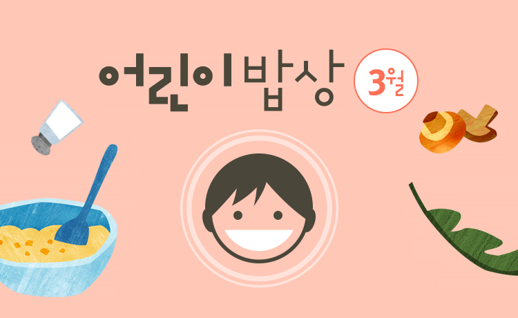

어린이 식단 상세

3월의 어린이 밥상
어린이식단표
| 월 | 팥밥, 아욱된장국 |
|---|---|
찐밤 |
|
| 화 | 수수밥, 콩나물국, 문어숙회, 양념간장 한재미나리무침 |
콩크림빵, 귤 |
|
| 수 | 감자밥스 테이크, 단호박수프, 무생채 |
흑미가래떡구이 |
|
| 목 | 기장밥, 굴미역국, 돼지고기장조림, 배추김 |
오징어어묵바, 단감 |
|
| 금 | 백미밥, 사골곰국, 새꼬막양념무침, 연근조림 깍두기 |
호떡, 사과 |
|
| 토 | 쌀리카토니파스타, 토마토소스 야콘채소샐러드 |
군고구마, 우유, 야콘채소샐러드 |
아이콘을 터치하시면 요리방법을 확인하실 수 있습니다.
참고하세요
- 팥밥
- 찬물에 불린 팥을 삶아 쌀 위에 얹어 밥을 짓습니다. 팥은 이뇨작용과 신장염 등에 도움이 됩니다. 팥에는 몸에 부담이 될 수 있는 사포닌이 들어 있으므로 살짝 끓었을 때 첫물을 버리기도 합니다.
- 결제 방법
- 한살림 찹쌀호떡가루와 땅콩, 잣, 계피가루 등 집에서 기호에 맞게 준 비한 속재료를 넣고 맛있는 호떡을 만들어 드세요.
- 단호박 스프
- 찐 단호박을 우유와 함께 믹서에 갈아 설탕 없이 단호박 본연의 단말을 느껴보세요!
관련물품 장보기

조합원가입 안내
- 우리 땅에서 나는 제철 재소와 곡식을 기본으로 하되 예부터 음식은 다양한 문화교류의 산물로 발전해온 만큼 전통음식은 물론이고 현대 화된 조리법도 다양하게 알리고 있습니다.
- 자연의 입맛을 살릴 수 있도록 재료 고유의 맛이 살아있는 소박한 조리 법을 추구하고 있습니다.
- 최대한 한살림 물품만으로 할 수 있는 요리와 식단을 만들고 있습니다. 그러나 필요한 경우, 자국 농업을 위한 우선순위(국산 유기 농산물>국 산 일반 농산물>수입 유기농산물>수입 일반 농산물)를 기준 삼아 예 외적으로 사용하고 있습니다.
- 육식과 채식을 골고루 하되 건강과 환경의 측면에서 채식 위주의 식단 을 권하고 있습니다.
- 밥을 존재하게 한 온갖 인연에 대해 공경심 갖기, 천천히 꼭꼭 씹어 먹 기 등 바람직한 밥상문화를 만들어나가고 있습니다.
- ※ 한살림 어린이식단은 한살림서울 식생활위원회에서 제공하였습니다.